Tenkawa, Nara: things to do, food and stays
Tenkawa · Nara
Tenkawa
Highlighted on the Nara map.

Stay
せせらぎの宿 弥仙館
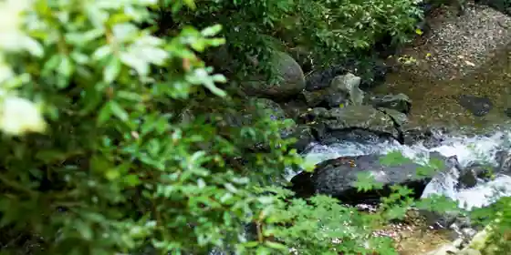
Seseragino Yado Misen Kan
宿 花屋徳兵衛
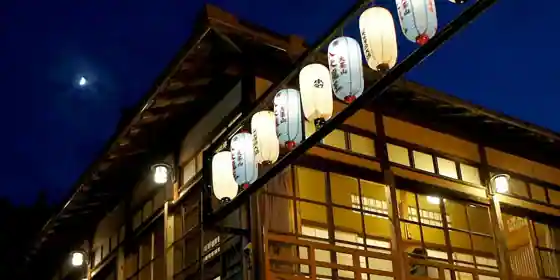
Yado Hanaya Tokubyoe
Inn at Dokawa Onsen in Dokawa, Tenkawa.
料理旅館まえひら
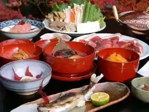
Ryori Ryokan Maehira
Ryokan inn in Kawai, Tenkawa with scenic views.
桝源旅館（洞川温泉）
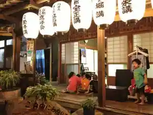
Masu Gen Ryokan (Dokawa Onsen)
Ryokan inn at Dokawa Onsen in Dokawa, Tenkawa.
さら徳
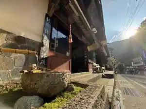
Sara Toku
洞川温泉 湯宿 丸文
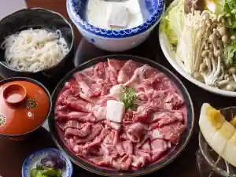
Dokawa Onsen Yuyado Maru Bun
Inn at Dokawa Onsen in Dokawa, Tenkawa.
洞川温泉 行者の宿 角甚（Kadojin）
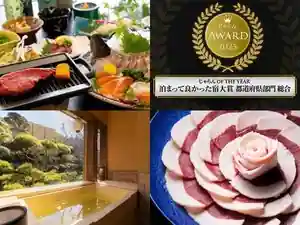
Dokawa Onsen Gyoja No Yado Kaku Jin (Kadojin)
Inn at Dokawa Onsen in Dokawa, Tenkawa with open-air baths.
あたらしや旅館 (大峯山 洞川温泉）
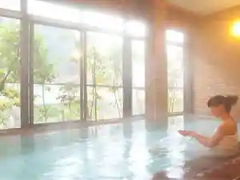
Atarashiya Ryokan (Omine Yama Dokawa Onsen)
Ryokan inn at Dokawa Onsen in Dokawa, Tenkawa with Wi-Fi and riverside setting.
温泉・名水・後鬼の里 旅館 紀の国屋甚八(天川・洞川温泉)
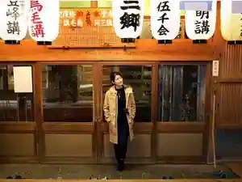
Onsen Meisui Goki No Sato Ryokan Ki No Kuni Ya Jinpachi (Amakawa Dokawa Onsen)
Ryokan inn at Dokawa Onsen in Dokawa, Tenkawa.
１日７組限定 地産ぼたん鍋と山郷の恵 湯宿 久保治（くぼじ）
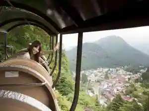
1 Nichi 7 Kumi Gentei Chisan Botan Nabe To Yamago No Megumi Yuyado Kubo Osamu (Kuboji)
Inn at Onsensatonitatazumu Onsen in Dokawa, Tenkawa.
光緑園 西清
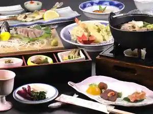
Hikari Ryokuen Nishi Kiyoshi
観峯荘にしぎ
Kan Mine So Nishigi
Dining
SÉN
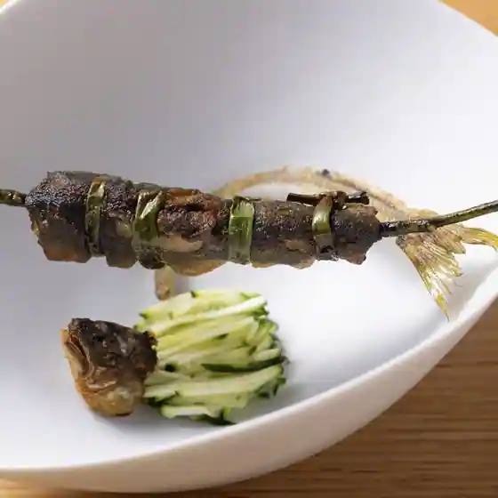
S E N
角甚
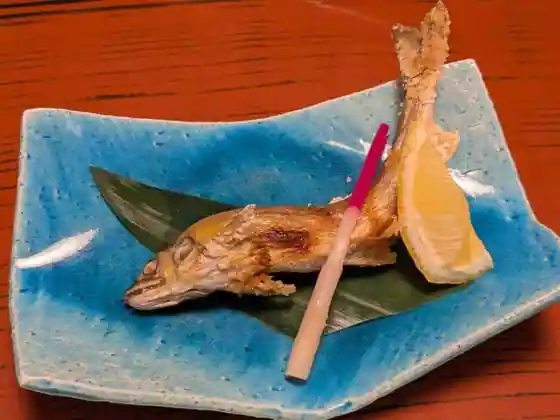
Kaku Jin
亀清
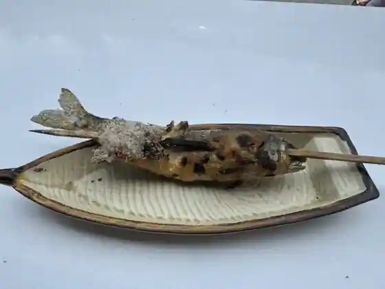
Kame Kiyoshi
きらく九兵衛
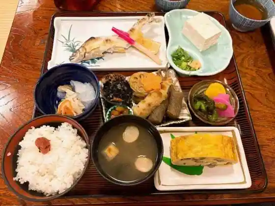
Kiraku Kyube
清九郎
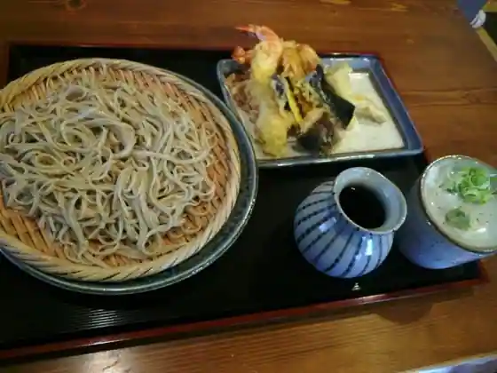
Seikuro
TENKARA GELATO
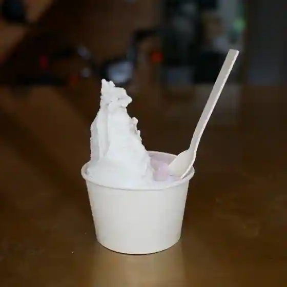
TENKARA GELATO
オーガニック カフェ ナヤ
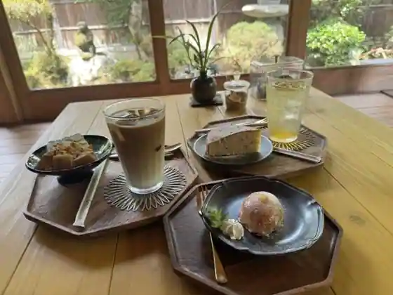
Oganikku Cafe Naya
みやそい
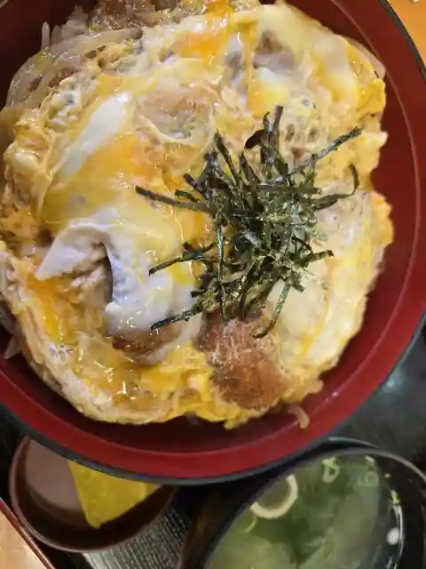
Miyasoi
中華料理 彰武
Chukaryori Akira Takeshi
洞川温泉醸造所
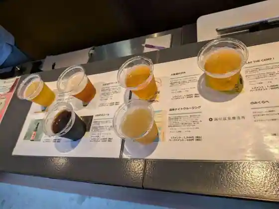
Dokawa Onsen Jozosho
喫茶 みつば
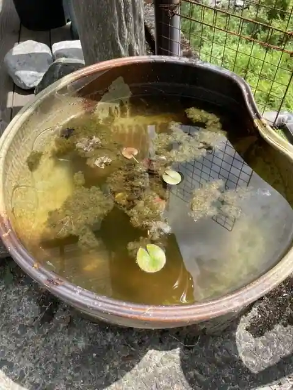
Kissa Mitsuha
柳豊すし店
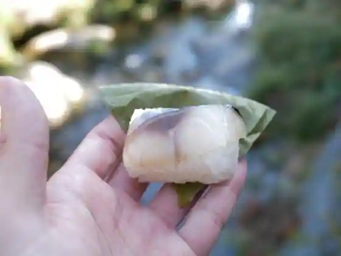
Yanagi Yutaka Sushi
洞川温泉 宿 花屋徳兵衛
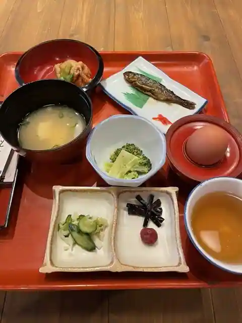
Dokawa Onsen Yado Hanaya Tokubyoe
にしぎ
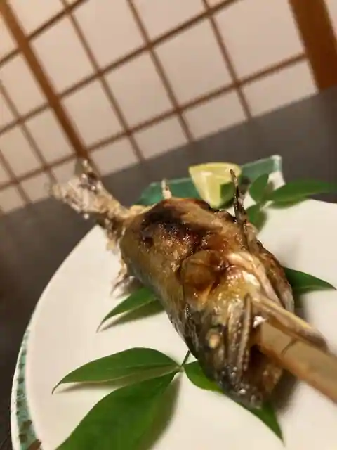
Nishigi
かどや食堂
Kadoya Shokudo
ごろごろ茶屋
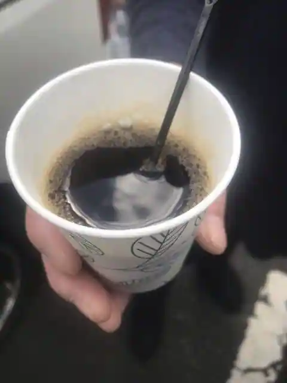
Gorogoro Chaya
お食事処 おおとり
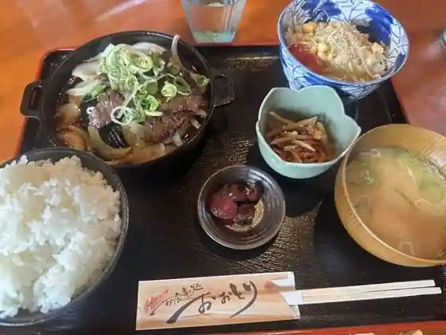
O Shokuji Tokoro Otori
まえひら
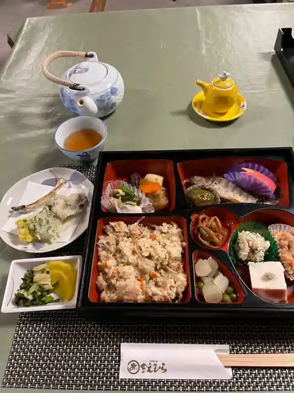
Maehira
桝源旅館
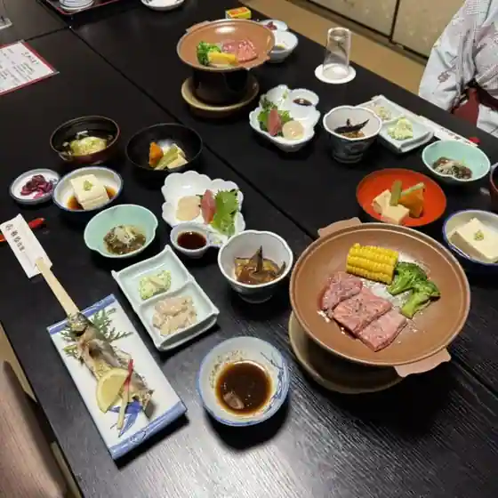
Masu Gen Ryokan
弥仙館
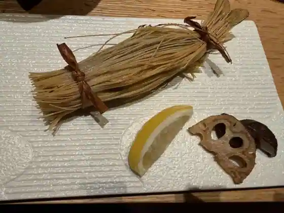
Misen Kan
あたらしや旅館
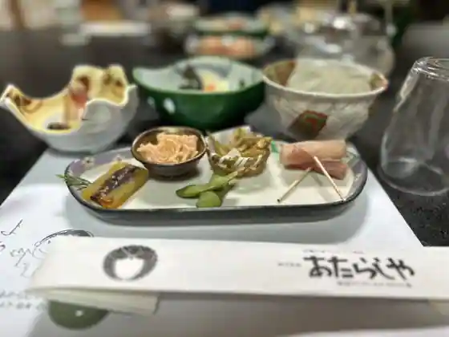
Atarashiya Ryokan
今西商店
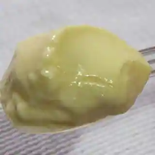
Imanishi Sho
いろは旅館
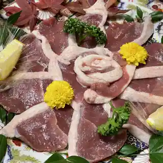
Iroha Ryokan
Sights
Mitarai Gorge
Omine Yama Ryusen Tera

Omine Yamadera

Tenkawa Dokawa Eko · Museum Center

Tensui Fun Shrine

Tenga Shrine (Tenga Daiben Zai Amatsuyashiro)
Misen · Hachi Keigagaku